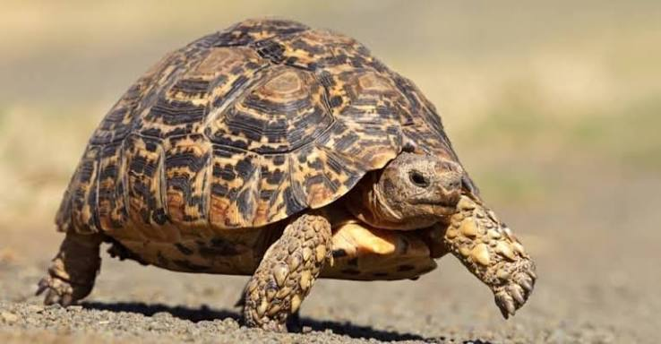

Herp Conservation Ghana was born from a sense of urgency and hope. In the early 2000s, amphibians across Ghana were vanishing, yet no one was watching. Driven by this silence, our founder, Dr Caleb Ofori-Boateng, began his journey to uncover species once thought lost forever. But science alone couldn't save them. He saw that real conservation had to start with people.
From discovering new frog species to transforming donated lands into a 5,000-acre haven for biodiversity, our journey has always been rooted in community. We have built tree nurseries, empowered volunteers, and turned belief into stewardship through Conservation Evangelism. We opened a canopy walkway that brought thousands of visitors to a place that was once forgotten.

🌿
Our Journey in Conservation